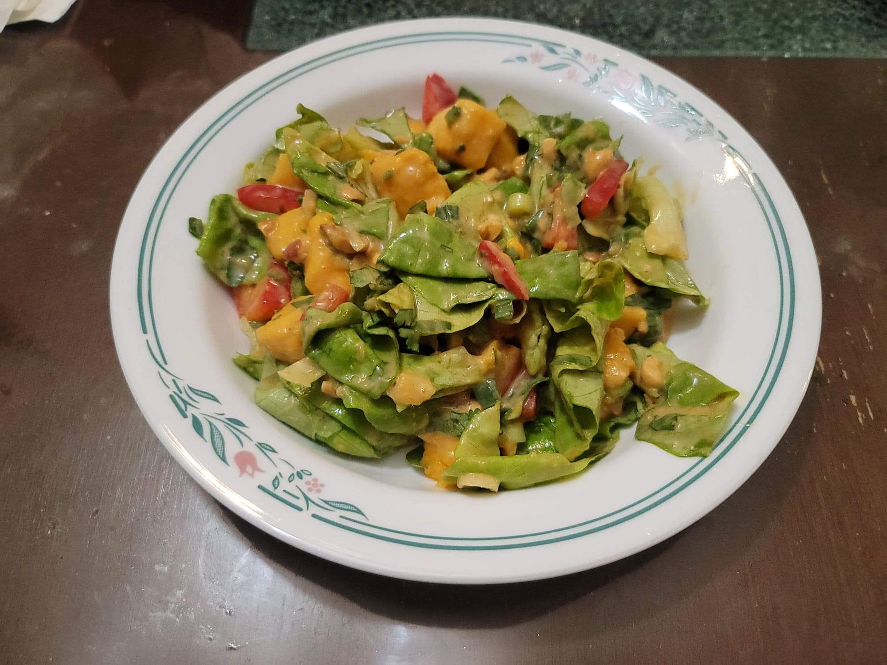

Thai Mango Salad

Ingredients:
Thai Mango Salad:
- 1 head Butterleaf lettuce, chopped or torn with hands
- 3 Champagne mangoes, cubed
- 1 Red bell pepper, julienned
- 3 Scallions, finely chopped
- 1/3 cup Roasted peanuts, chopped
- 1/4 bunch Cilantro, chopped
- 1 Jalapeño, minced
Peanut Dressing:
- 1/4 cup Peanut butter
- 1/4 cup Lime juice, about 2 Limes
- 1 tbsp Soy sauce
- 1 tbsp Apple cider vinegar
- 1 tbsp Honey
- 1 tsp Sesame oil
- 2 cloves Garlic, pressed or minced
- Optional: Red pepper flakes to taste
Instructions:
- Assemble the salad ingredients into a large bowl.
- Combine the dressing ingredients in a measuring cup. Whisk until homogenous.
- Add the dressing to taste and toss into the salad. Serve immediately.